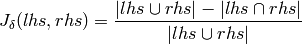
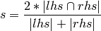
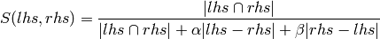

- fuzzycomp.levenshtein_distance(lhs, rhs)¶
Parameters:
- lhs – The object to compare
- rhs – The object to compare with
Returns: An int >= 0 representing the Levenshtein Distance.
Raise : ValueError
Calculates the Levenshtein distance between two strings as described in more detail here .
- fuzzycomp.jaccard_distance(lhs, rhs)¶
Parameters:
- lhs – The object to compare
- rhs – The object to compare with
Returns: A float in the range [0.0, 1.0]
Raise : ValueError
Calculates the Jaccard Distance for the two objects. The full explanation can be found here. The equation used is as follows.

- fuzzycomp.hamming_distance(lhs, rhs)¶
Parameters:
- lhs – The object to compare
- rhs – The object to compare with
Returns: An int >= 0 representing the Hamming Distance between the two objects.
Raise : ValueError
Calculates the Hamming Distance between two sequences as described in more detail here .
- fuzzycomp.lcs_length(lhs, rhs)¶
Parameters:
- lhs – The object to compare
- rhs – The object to compare with
Returns: An int >= 0 indicating the Longest Common Subsequence.
Raise : ValueError
Calculates the longest common subsequence as described in more detail here.
- fuzzycomp.jaro_distance(lhs, rhs)¶
Parameters:
- lhs – The object to compare
- rhs – The object to compare with
Returns: A float in the range [0.0, 1.0]. 1.0 denotes a perfect match.
Raise : ValueError
Implements the Jaro Distance as described here .
- fuzzycomp.jaro_winkler(lhs, rhs, prefix_scale=0.1)¶
Parameters:
- lhs – The object to compare
- rhs – The object to compare with
- prefix_scale – The scale factor to use for common prefixes. The value should not be larger than 0.25, although this is not enforced by the function.
Returns: A float >= 0.0. For 0.0 <= prefix_scale <= 0.25. The return value will be in the range [0.0, 1.0]
Raise : ValueError
Implements the Jaro Winkler Distance as described here .
The Jaro Winkler favours strings with a common prefix. The weight given to strings with a common prefix is controlled using the prefix_scale parameter. The standard value for prefix_scale for the Jaro Winkler distance is 0.1 and the value should normally not be greater than 0.5 as this could produce distance values greater than 1.0.
For the common prefix, a maximum of 4 characters will be considered.
- fuzzycomp.dice_coefficient(lhs, rhs)¶
Parameters:
- lhs – The object to compare
- rhs – The object to compare with
Returns: A float in the range [0.0, 1.0]
Raise : ValueError
Calculates the dice coefficient as described here using the equation.

When comparing strings, the bigrams are calculated for the both strings and they are then compared, using the above equation.
- fuzzycomp.tversky_index(lhs, rhs, alpha, beta)¶
Parameters:
- lhs – The object to compare
- rhs – The object to compare with
- alpha –
- beta –
Returns: A float in the range [0.0, 1.0]
Raise : ValueError
Calculates the Tversky index for the two objects, as described here

When comparing strings, the bigrams for the both strings are calculated and they are then compared using the above equation.
- fuzzycomp.soundex(name)¶
Parameters: name (str, unicode) – The name to be encoded Returns: The encoded string Raise : ValueError Implements the American Soundex Algorithm. The algorithm is described on Wikipedia.
Calculates a 4 char code for the provided name formatted as LDDD, where L is an upper case letter and D is a digit. If the resulting code is shorter than 4 char, it is padded with zeros.
Note
This implement ation follows the standard American Soundex implementation. There are other suggested implementations where the letters AEIOUHWY are first encoded as 0 and then removed after duplicates have removed. One example where this would make a difference is the word “HERMAN” that encodes to H650 using classic Soundex and to H655 using the suggested change.
- fuzzycomp.nysiis(name, truncate=True)¶
Parameters:
- name (str, unicode) – The name to be encoded
- truncate (bool) – Flag to control if the returned code should be truncated to 6 chars or not. For a true NYSIIS implementation, this should be True.
Returns: The encoded string
Raise : ValueError
Implements the original New York State Identification and Intelligence System ( NYSIIS ) phonetic algorithm. The algorithm is described on this page and on Wikipedia .
For the standard NYSIIS algorithm, the resulting code is truncated to a maximum of 6 characters, this could be changed by passing truncate = False to return the full length codes.
Note
There appears to be an error in the description in the Wikipedia description of the algorithm. It is stated that KN -> N in the beginning of the word, however several other sources suggest that it should be KN -> NN so that KNUTH -> NNAT. This is the functionality that has been implemented.
- fuzzycomp.metaphone(name, length=4)¶
Parameters:
- name (str, unicode) – The name to be encoded
- length (int) – The maximum length to use for the resulting code
Returns: A string of maximum length length
Raise : ValueError
There appear to be several different ways to implement the Metaphone algorithm. This seems to come from the fact that the description and the implementation of the original algorithm from Lawrence Philips do not correspond entirely.
This implementation aims at following the inte rpreted implementation presented by Michael Kuhn.
Normally the first four characters of the code are used for the Metaphone, but the maximum length of the returned code can be controlled by passing the length argument.
- fuzzycomp.cologne_phonetic(name)¶
Parameters: name (str, unicode) – The name to be encoded Returns: The encoded string Raise : ValueError The Cologne Phonetic Algorithm is a phonetic encoding algorithm specialised for the german language. A description in english can be found on the manual page for this Java implementation.
Wikipedia has a description of the algorithm in german.
Unlike most other phonetic encoding algorithms, the Cologne Phonetic is not truncated to a specific length but rather returned in its full length.
Note
As suggested in the Wikipedia description, umlauts and ß are encoded as 0
Using some of the comparison algorithms:
>>> from fuzzycomp import fuzzycomp
>>> fuzzycomp.levenshtein_distance("Saturday", "Sunday")
3
>>> fuzzycomp.jaccard_distance( "Hello", "World" )
0.7142857142857143
>>> fuzzycomp.lcs_length("XMJYAUZ", "MZJAWXU")
4
>>> fuzzycomp.jaro_winkler( "DWAYNE", "DUANE" )
0.8400000000000001
And for the phonetic algorithms:
>>> from fuzzycomp import fuzzycomp
>>> fuzzycomp.soundex("HERMAN")
'H650'
>>> fuzzycomp.nysiis("KNUTH")
'NNAT'
>>> fuzzycomp.nysiis("PHILLIPSON", False)
'FFALAPSAN'
>>> fuzzycomp.metaphone( "ANASTHA" )
'ANS0'
>>> fuzzycomp.metaphone("ESCARMANT", 7)
'ESKRMNT'
>>> fuzzycomp.cologne_phonetic("Breschnew")
'17863'